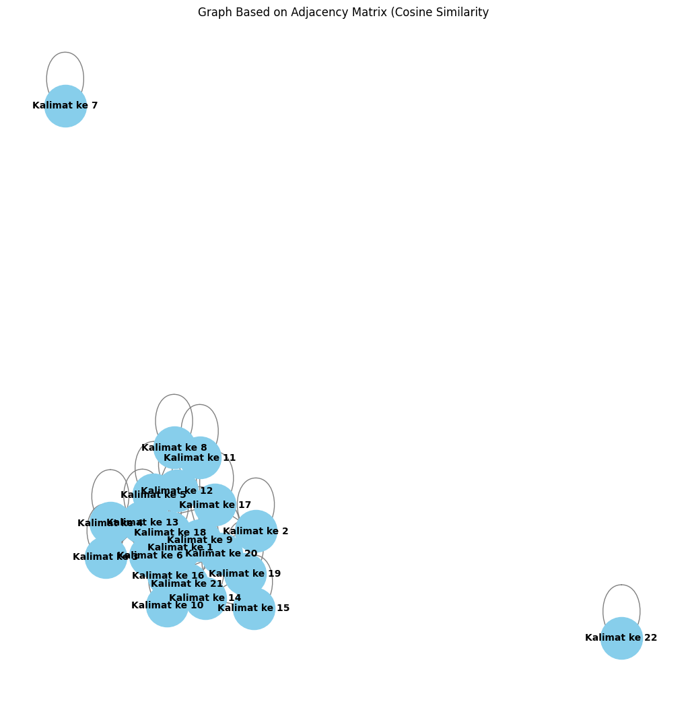

Tugas 4: Ringkasan Dokumen dengan Graph#
from google.colab import drive
drive.mount('/content/drive')
Drive already mounted at /content/drive; to attempt to forcibly remount, call drive.mount("/content/drive", force_remount=True).
import pandas as pd
df = pd.read_csv("/content/drive/My Drive/ppw/report/tugas-ppw/data_berita_detik.csv")
df.head()
| judul | tanggal | isi | kategori | |
|---|---|---|---|---|
| 0 | Gejala Sifilis pada Wanita Berdasarkan Tahapan... | Rabu, 16 Okt 2024 21:00 WIB | Jakarta - Sifilis atau penyakit raja singa ter... | Kesehatan |
| 1 | Puncak Nafsu Pria Ada di Umur Berapa? Studi Bi... | Rabu, 16 Okt 2024 20:02 WIB | Jakarta - Sebagian orang pasti sudah mengenal ... | Kesehatan |
| 2 | Gejala Kanker Mulut yang Kerap Tak Disadari, T... | Rabu, 16 Okt 2024 18:02 WIB | Jakarta - Setiap orang mungkin pernah mengalam... | Kesehatan |
| 3 | Kapan Waktu yang Tepat untuk Minum Air Rebusan... | Rabu, 16 Okt 2024 17:31 WIB | Jakarta - Air rebusan serai dikenal sebagai sa... | Kesehatan |
| 4 | Viral Hanni NewJeans Bicara soal Bullying di T... | Rabu, 16 Okt 2024 16:34 WIB | Jakarta - Viral momen member NewJeans, Hanni, ... | Kesehatan |
# mengambil satu sample berita
sample_berita = df['isi'].iloc[6]
print(sample_berita)
Jakarta - Seorang pria bernama Evan Plotkin di Connecticut, AS, menggugat perusahaan Johnson & Johnson (J&J) setelah produk bedak taburnya diklaim memicu kanker. Pria tersebut menggugat sejak 2021 setelah ia didiagnosis mengidap kanker langka mesothelioma, kanker yang umumnya dikaitkan dengan paparan asbes, memengaruhi lapisan paru-paru dan organ lainnya. Ia juga mengaku merasa sakit setiap menghirup bedak bayi yang diproduksi J&J. Plotkin mengaku terpapar produk J&J melalui penggunaan pribadi sejak tahun 1950-an dan penggunaan oleh anak-anaknya hingga tahun 2000-an. Pengadilan Tinggi Fairfield County, Connecticut, memutuskan agar perusahaan J&J membayar sekitar 15 juta dollar USD atau sekitar Rp 233 Miliar kepada Plotkin untuk ganti rugi. "Evan Plotkin dan tim persidangannya sangat gembira karena juri sekali lagi memutuskan untuk meminta pertanggungjawaban Johnson & Johnson atas pemasaran dan penjualan produk bedak bayi yang mereka ketahui mengandung asbes," kata Ben Braly, pengacara Plotkin, dalam email, dikutip Reuters. Braly menekankan bahwa kasus tersebut menyoroti kekhawatiran serius tentang keselamatan konsumen dan tanggung jawab perusahaan. Selain ganti rugi kompensasi sebesar 15 juta dolar, juri juga merekomendasikan agar perusahaan dikenakan ganti rugi punitif. Ganti rugi punitif ini, yang ditujukan untuk menghukum Johnson & Johnson atas tindakannya, akan ditentukan kemudian oleh pengadilan. Tanggapan Johnson & Johnson Johnson & Johnson telah menolak klaim tersebut dan mengisyaratkan niatnya untuk mengajukan banding atas keputusan tersebut. Erik Haas, wakil presiden litigasi perusahaan di seluruh dunia, mengkritik penanganan kasus tersebut oleh pengadilan, dengan mengklaim bahwa juri tidak diberikan bukti penting. "Putusan tersebut tidak sesuai dengan penelitian ilmiah selama puluhan tahun yang menunjukkan bahwa produk bedak kami aman dan tidak mengandung asbes," kata Haas dalam sebuah pernyataan, dengan menegaskan bahwa produk perusahaan tersebut telah menjalani evaluasi keamanan yang ekstensif. Perusahaan tersebut telah lama membantah adanya hubungan antara bedak taleknya dengan kontaminasi asbes, dan mengutip studi independen yang menurut J&J, menegaskan keamanan produk tersebut. Lebih lanjut, putusan ini muncul di tengah pertikaian hukum yang jauh lebih besar yang dihadapi Johnson & Johnson. Kasus ini hanyalah satu dari sekian banyak pertikaian hukum yang dihadapi perusahaan farmasi raksasa tersebut. Dikutip dari Republic World, Johnson & Johnson saat ini tengah berupaya menyelesaikan klaim dari lebih dari 62.000 orang yang menuduh bahwa produk berbasis bedaknya menyebabkan kanker ovarium dan kanker ginekologi lainnya. Perusahaan tersebut telah mengusulkan penyelesaian hampir $9 miliar atau Rp 139 triliun melalui kebangkrutan untuk menyelesaikan kasus-kasus ini. Akan tetapi, kesepakatan tersebut telah menghadapi tantangan hukum dari beberapa pengacara penggugat dan saat ini sedang digugat. Meskipun penyelesaian kebangkrutan akan menunda gugatan kanker ginekologi, penyelesaian tersebut tidak mencakup kasus mesothelioma seperti yang dialami Plotkin. Johnson & Johnson sebelumnya telah menyelesaikan beberapa klaim mesothelioma tetapi belum mengusulkan penyelesaian nasional untuk kelompok kasus ini. (suc/kna)
memisahkan per kalimat
# Membuat list untuk menyimpan hasil
result_list = []
# Pisahkan kalimat berdasarkan titik
sentences = sample_berita.split('.') # Pisahkan kalimat berdasarkan titik
sentences = [s.strip() for s in sentences if s.strip()] # Hilangkan spasi berlebih dan kosong
# Looping untuk menambahkan setiap kalimat ke result_list
for i, sentence in enumerate(sentences, 1):
result_list.append({'kalimat ke n': f"Kalimat ke {i}", 'kalimat': sentence})
# Membuat DataFrame dari hasil pemisahan
result_df = pd.DataFrame(result_list)
# Tampilkan DataFrame
result_df
| kalimat ke n | kalimat | |
|---|---|---|
| 0 | Kalimat ke 1 | Jakarta - Seorang pria bernama Evan Plotkin di... |
| 1 | Kalimat ke 2 | Pria tersebut menggugat sejak 2021 setelah ia ... |
| 2 | Kalimat ke 3 | Ia juga mengaku merasa sakit setiap menghirup ... |
| 3 | Kalimat ke 4 | Plotkin mengaku terpapar produk J&J melalui pe... |
| 4 | Kalimat ke 5 | Pengadilan Tinggi Fairfield County, Connecticu... |
| 5 | Kalimat ke 6 | "Evan Plotkin dan tim persidangannya sangat ge... |
| 6 | Kalimat ke 7 | Braly menekankan bahwa kasus tersebut menyorot... |
| 7 | Kalimat ke 8 | Selain ganti rugi kompensasi sebesar 15 juta d... |
| 8 | Kalimat ke 9 | Ganti rugi punitif ini, yang ditujukan untuk m... |
| 9 | Kalimat ke 10 | Tanggapan Johnson & Johnson Johnson & Johnson ... |
| 10 | Kalimat ke 11 | Erik Haas, wakil presiden litigasi perusahaan ... |
| 11 | Kalimat ke 12 | "Putusan tersebut tidak sesuai dengan peneliti... |
| 12 | Kalimat ke 13 | Perusahaan tersebut telah lama membantah adany... |
| 13 | Kalimat ke 14 | Lebih lanjut, putusan ini muncul di tengah per... |
| 14 | Kalimat ke 15 | Kasus ini hanyalah satu dari sekian banyak per... |
| 15 | Kalimat ke 16 | Dikutip dari Republic World, Johnson & Johnson... |
| 16 | Kalimat ke 17 | 000 orang yang menuduh bahwa produk berbasis b... |
| 17 | Kalimat ke 18 | Perusahaan tersebut telah mengusulkan penyeles... |
| 18 | Kalimat ke 19 | Akan tetapi, kesepakatan tersebut telah mengha... |
| 19 | Kalimat ke 20 | Meskipun penyelesaian kebangkrutan akan menund... |
| 20 | Kalimat ke 21 | Johnson & Johnson sebelumnya telah menyelesaik... |
| 21 | Kalimat ke 22 | (suc/kna) |
pre processing
!pip install Sastrawi
Requirement already satisfied: Sastrawi in /usr/local/lib/python3.10/dist-packages (1.0.1)
import pandas as pd
import numpy as np
import re
import nltk
from nltk.corpus import stopwords
from Sastrawi.Stemmer.StemmerFactory import StemmerFactory
from sklearn.feature_extraction.text import TfidfVectorizer
from sklearn.metrics.pairwise import cosine_similarity
import nltk
from nltk.tokenize import sent_tokenize
import networkx as nx
import matplotlib.pyplot as plt
# Download stopwords untuk bahasa Indonesia
nltk.download('stopwords')
stop_words = stopwords.words('indonesian')
# Fungsi preprocessing yang disesuaikan
def remove_url(data_berita):
url = re.compile(r'https?://\S+|www\.S+')
return url.sub(r'', data_berita)
def remove_html(data_berita):
html = re.compile(r'<.#?>')
return html.sub(r'', data_berita)
def remove_emoji(data_berita):
emoji_pattern = re.compile("["
u"\U0001F600-\U0001F64F" # emoticon
u"\U0001F300-\U0001F5FF" # symbols & pictographs
u"\U0001F680-\U0001F6FF" # transport & map symbols
u"\U0001F1E0-\U0001F1FF" # flags (iOS)
"]+", flags=re.UNICODE)
return emoji_pattern.sub(r'', data_berita)
def remove_numbers(data_berita):
data_berita = re.sub(r'\d+', '', data_berita)
return data_berita
def remove_symbols(data_berita):
data_berita = re.sub(r'[^a-zA-Z0-9\s]', '', data_berita)
return data_berita
def case_folding(text):
if isinstance(text, str):
return text.lower()
return text
def tokenize(text):
return text.split()
def remove_stopwords(text):
return [word for word in text if word not in stop_words]
# Inisialisasi stemmer
factory = StemmerFactory()
stemmer = factory.create_stemmer()
def stemming(text):
return [stemmer.stem(word) for word in text]
# Looping setiap kalimat di dataframe 'result_df'
result_df['clean'] = result_df['kalimat'].apply(remove_url)
result_df['clean'] = result_df['clean'].apply(remove_html)
result_df['clean'] = result_df['clean'].apply(remove_emoji)
result_df['clean'] = result_df['clean'].apply(remove_symbols)
result_df['clean'] = result_df['clean'].apply(remove_numbers)
result_df['clean'] = result_df['clean'].apply(case_folding)
result_df['tokenize'] = result_df['clean'].apply(tokenize)
result_df['stopword removal'] = result_df['tokenize'].apply(remove_stopwords)
result_df['stemming'] = result_df['stopword removal'].apply(stemming)
# Gabungkan kata setelah stemming
result_df['final'] = result_df['stemming'].apply(lambda x: ' '.join(x))
# Tampilkan hasil dataframe
result_df[['kalimat ke n', 'final']]
[nltk_data] Downloading package stopwords to /root/nltk_data...
[nltk_data] Package stopwords is already up-to-date!
| kalimat ke n | final | |
|---|---|---|
| 0 | Kalimat ke 1 | jakarta pria nama evan plotkin connecticut as ... |
| 1 | Kalimat ke 2 | pria gugat diagnosis idap kanker langka mesoth... |
| 2 | Kalimat ke 3 | aku sakit hirup bedak bayi produksi jj |
| 3 | Kalimat ke 4 | plotkin aku papar produk jj guna pribadi an gu... |
| 4 | Kalimat ke 5 | adil fairfield county connecticut putus usaha ... |
| 5 | Kalimat ke 6 | evan plotkin tim sidang gembira juri putus per... |
| 6 | Kalimat ke 7 | braly tekan sorot khawatir serius selamat kons... |
| 7 | Kalimat ke 8 | ganti rugi kompensasi juta dolar juri rekomend... |
| 8 | Kalimat ke 9 | ganti rugi punitif hukum johnson johnson tinda... |
| 9 | Kalimat ke 10 | tanggap johnson johnson johnson johnson tolak ... |
| 10 | Kalimat ke 11 | erik haas wakil presiden litigasi usaha dunia ... |
| 11 | Kalimat ke 12 | putus sesuai teliti ilmiah puluh produk bedak ... |
| 12 | Kalimat ke 13 | usaha ban hubung bedak talek kontaminasi asbes... |
| 13 | Kalimat ke 14 | putus muncul tikai hukum hadap johnson johnson |
| 14 | Kalimat ke 15 | sekian tikai hukum hadap usaha farmasi raksasa |
| 15 | Kalimat ke 16 | kutip republic world johnson johnson upaya sel... |
| 16 | Kalimat ke 17 | orang tuduh produk bas bedak sebab kanker ovar... |
| 17 | Kalimat ke 18 | usaha usul selesai miliar rp triliun bangkrut ... |
| 18 | Kalimat ke 19 | sepakat hadap tantang hukum acara gugat gugat |
| 19 | Kalimat ke 20 | selesai bangkrut tunda gugat kanker ginekologi... |
| 20 | Kalimat ke 21 | johnson johnson selesai klaim mesothelioma usu... |
| 21 | Kalimat ke 22 | suckna |
TF-IDF
menghitung skor TF-IDF (Term Frequency-Inverse Document Frequency) dari setiap kata dalam kalimat yang telah diproses untuk menilai seberapa penting kata-kata tersebut dalam konteks kalimat. Pertama, kalimat-kalimat digabung menjadi dokumen, kemudian TF-IDF diterapkan untuk menghasilkan matriks yang menunjukkan skor setiap kata dalam setiap kalimat. Nama-nama kata (fitur) diambil dan hasil TF-IDF ini diubah menjadi tabel agar lebih mudah dianalisis. Selanjutnya, ditambahkan kolom identifikasi untuk setiap kalimat, dan akhirnya tabel tersebut ditampilkan dengan menampilkan skor TF-IDF dari kata-kata di setiap kalimat.
# Gabungkan semua kalimat hasil stemming menjadi dokumen untuk tiap kalimat
documents = result_df['final'].tolist()
# Inisialisasi TF-IDF Vectorizer
tfidf_vectorizer = TfidfVectorizer()
# Terapkan TF-IDF ke dokumen (kalimat yang sudah dipreproses)
tfidf_matrix = tfidf_vectorizer.fit_transform(documents)
# Mendapatkan nama-nama fitur (kata-kata)
feature_names = tfidf_vectorizer.get_feature_names_out()
# Mengubah hasil TF-IDF menjadi dataframe
tfidf_df = pd.DataFrame(tfidf_matrix.toarray(), columns=feature_names)
# Tambahkan kolom 'no' dan 'kalimat ke n' untuk identifikasi
tfidf_df.insert(0, 'kalimat ke n', result_df['kalimat ke n'])
# Tampilkan dataframe dengan skor TF-IDF
tfidf_df
| kalimat ke n | acara | adil | aju | aku | alami | aman | an | anakanaknya | as | ... | tolak | triliun | tuduh | tunda | upaya | usaha | usd | usul | wakil | world | |
|---|---|---|---|---|---|---|---|---|---|---|---|---|---|---|---|---|---|---|---|---|---|
| 0 | Kalimat ke 1 | 0.000000 | 0.000000 | 0.000000 | 0.000000 | 0.00000 | 0.000000 | 0.000000 | 0.000000 | 0.284876 | ... | 0.000000 | 0.000000 | 0.000000 | 0.00000 | 0.000000 | 0.151685 | 0.000000 | 0.000000 | 0.000000 | 0.000000 |
| 1 | Kalimat ke 2 | 0.000000 | 0.000000 | 0.000000 | 0.000000 | 0.00000 | 0.000000 | 0.000000 | 0.000000 | 0.000000 | ... | 0.000000 | 0.000000 | 0.000000 | 0.00000 | 0.000000 | 0.000000 | 0.000000 | 0.000000 | 0.000000 | 0.000000 |
| 2 | Kalimat ke 3 | 0.000000 | 0.000000 | 0.000000 | 0.378777 | 0.00000 | 0.000000 | 0.000000 | 0.000000 | 0.000000 | ... | 0.000000 | 0.000000 | 0.000000 | 0.00000 | 0.000000 | 0.000000 | 0.000000 | 0.000000 | 0.000000 | 0.000000 |
| 3 | Kalimat ke 4 | 0.000000 | 0.000000 | 0.000000 | 0.245740 | 0.00000 | 0.000000 | 0.557099 | 0.278549 | 0.000000 | ... | 0.000000 | 0.000000 | 0.000000 | 0.00000 | 0.000000 | 0.000000 | 0.000000 | 0.000000 | 0.000000 | 0.000000 |
| 4 | Kalimat ke 5 | 0.000000 | 0.233476 | 0.000000 | 0.000000 | 0.00000 | 0.000000 | 0.000000 | 0.000000 | 0.000000 | ... | 0.000000 | 0.000000 | 0.000000 | 0.00000 | 0.000000 | 0.155660 | 0.292342 | 0.000000 | 0.000000 | 0.000000 |
| 5 | Kalimat ke 6 | 0.196001 | 0.000000 | 0.000000 | 0.000000 | 0.00000 | 0.000000 | 0.000000 | 0.000000 | 0.000000 | ... | 0.000000 | 0.000000 | 0.000000 | 0.00000 | 0.000000 | 0.000000 | 0.000000 | 0.000000 | 0.000000 | 0.000000 |
| 6 | Kalimat ke 7 | 0.000000 | 0.000000 | 0.000000 | 0.000000 | 0.00000 | 0.000000 | 0.000000 | 0.000000 | 0.000000 | ... | 0.000000 | 0.000000 | 0.000000 | 0.00000 | 0.000000 | 0.187530 | 0.000000 | 0.000000 | 0.000000 | 0.000000 |
| 7 | Kalimat ke 8 | 0.000000 | 0.000000 | 0.000000 | 0.000000 | 0.00000 | 0.000000 | 0.000000 | 0.000000 | 0.000000 | ... | 0.000000 | 0.000000 | 0.000000 | 0.00000 | 0.000000 | 0.156467 | 0.000000 | 0.000000 | 0.000000 | 0.000000 |
| 8 | Kalimat ke 9 | 0.000000 | 0.309531 | 0.000000 | 0.000000 | 0.00000 | 0.000000 | 0.000000 | 0.000000 | 0.000000 | ... | 0.000000 | 0.000000 | 0.000000 | 0.00000 | 0.000000 | 0.000000 | 0.000000 | 0.000000 | 0.000000 | 0.000000 |
| 9 | Kalimat ke 10 | 0.000000 | 0.000000 | 0.281327 | 0.000000 | 0.00000 | 0.000000 | 0.000000 | 0.000000 | 0.000000 | ... | 0.281327 | 0.000000 | 0.000000 | 0.00000 | 0.000000 | 0.000000 | 0.000000 | 0.000000 | 0.000000 | 0.000000 |
| 10 | Kalimat ke 11 | 0.000000 | 0.243007 | 0.000000 | 0.000000 | 0.00000 | 0.000000 | 0.000000 | 0.000000 | 0.000000 | ... | 0.000000 | 0.000000 | 0.000000 | 0.00000 | 0.000000 | 0.162014 | 0.000000 | 0.000000 | 0.304276 | 0.000000 |
| 11 | Kalimat ke 12 | 0.000000 | 0.000000 | 0.000000 | 0.000000 | 0.00000 | 0.441406 | 0.000000 | 0.000000 | 0.000000 | ... | 0.000000 | 0.000000 | 0.000000 | 0.00000 | 0.000000 | 0.133205 | 0.000000 | 0.000000 | 0.000000 | 0.000000 |
| 12 | Kalimat ke 13 | 0.000000 | 0.000000 | 0.000000 | 0.000000 | 0.00000 | 0.286064 | 0.000000 | 0.000000 | 0.000000 | ... | 0.000000 | 0.000000 | 0.000000 | 0.00000 | 0.000000 | 0.172654 | 0.000000 | 0.000000 | 0.000000 | 0.000000 |
| 13 | Kalimat ke 14 | 0.000000 | 0.000000 | 0.000000 | 0.000000 | 0.00000 | 0.000000 | 0.000000 | 0.000000 | 0.000000 | ... | 0.000000 | 0.000000 | 0.000000 | 0.00000 | 0.000000 | 0.000000 | 0.000000 | 0.000000 | 0.000000 | 0.000000 |
| 14 | Kalimat ke 15 | 0.000000 | 0.000000 | 0.000000 | 0.000000 | 0.00000 | 0.000000 | 0.000000 | 0.000000 | 0.000000 | ... | 0.000000 | 0.000000 | 0.000000 | 0.00000 | 0.000000 | 0.232647 | 0.000000 | 0.000000 | 0.000000 | 0.000000 |
| 15 | Kalimat ke 16 | 0.000000 | 0.000000 | 0.000000 | 0.000000 | 0.00000 | 0.000000 | 0.000000 | 0.000000 | 0.000000 | ... | 0.000000 | 0.000000 | 0.000000 | 0.00000 | 0.405992 | 0.000000 | 0.000000 | 0.000000 | 0.000000 | 0.405992 |
| 16 | Kalimat ke 17 | 0.000000 | 0.000000 | 0.000000 | 0.000000 | 0.00000 | 0.000000 | 0.000000 | 0.000000 | 0.000000 | ... | 0.000000 | 0.000000 | 0.338227 | 0.00000 | 0.000000 | 0.000000 | 0.000000 | 0.000000 | 0.000000 | 0.000000 |
| 17 | Kalimat ke 18 | 0.000000 | 0.000000 | 0.000000 | 0.000000 | 0.00000 | 0.000000 | 0.000000 | 0.000000 | 0.000000 | ... | 0.000000 | 0.363921 | 0.000000 | 0.00000 | 0.000000 | 0.193773 | 0.000000 | 0.321056 | 0.000000 | 0.000000 |
| 18 | Kalimat ke 19 | 0.356947 | 0.000000 | 0.000000 | 0.000000 | 0.00000 | 0.000000 | 0.000000 | 0.000000 | 0.000000 | ... | 0.000000 | 0.000000 | 0.000000 | 0.00000 | 0.000000 | 0.000000 | 0.000000 | 0.000000 | 0.000000 | 0.000000 |
| 19 | Kalimat ke 20 | 0.000000 | 0.000000 | 0.000000 | 0.000000 | 0.33541 | 0.000000 | 0.000000 | 0.000000 | 0.000000 | ... | 0.000000 | 0.000000 | 0.000000 | 0.33541 | 0.000000 | 0.000000 | 0.000000 | 0.000000 | 0.000000 | 0.000000 |
| 20 | Kalimat ke 21 | 0.000000 | 0.000000 | 0.000000 | 0.000000 | 0.00000 | 0.000000 | 0.000000 | 0.000000 | 0.000000 | ... | 0.000000 | 0.000000 | 0.000000 | 0.00000 | 0.000000 | 0.000000 | 0.000000 | 0.322987 | 0.000000 | 0.000000 |
| 21 | Kalimat ke 22 | 0.000000 | 0.000000 | 0.000000 | 0.000000 | 0.00000 | 0.000000 | 0.000000 | 0.000000 | 0.000000 | ... | 0.000000 | 0.000000 | 0.000000 | 0.00000 | 0.000000 | 0.000000 | 0.000000 | 0.000000 | 0.000000 | 0.000000 |
22 rows × 138 columns
Menghitung kemiripan antar kalimat
Kalimat-kalimat dalam kumpulan teks yang telah diubah menjadi angka menggunakan TF-IDF, dan kemudian dihitung cosine similarity-nya. Nilai cosine similarity ini menunjukkan seberapa mirip dua kalimat. Jika angkanya mendekati 1, berarti dua kalimat sangat mirip, sedangkan jika mendekati 0, berarti tidak mirip.
# Menghitung cosine similarity antar kalimat berdasarkan TF-IDF
cosine_sim = cosine_similarity(tfidf_matrix)
# Membuat dataframe untuk menyimpan hasil cosine similarity
cosine_sim_df = pd.DataFrame(cosine_sim, index=result_df['kalimat ke n'], columns=result_df['kalimat ke n'])
# Tampilkan matriks cosine similarity
cosine_sim_df
| kalimat ke n | Kalimat ke 1 | Kalimat ke 2 | Kalimat ke 3 | Kalimat ke 4 | Kalimat ke 5 | Kalimat ke 6 | Kalimat ke 7 | Kalimat ke 8 | Kalimat ke 9 | Kalimat ke 10 | ... | Kalimat ke 13 | Kalimat ke 14 | Kalimat ke 15 | Kalimat ke 16 | Kalimat ke 17 | Kalimat ke 18 | Kalimat ke 19 | Kalimat ke 20 | Kalimat ke 21 | Kalimat ke 22 |
|---|---|---|---|---|---|---|---|---|---|---|---|---|---|---|---|---|---|---|---|---|---|
| kalimat ke n | |||||||||||||||||||||
| Kalimat ke 1 | 1.000000 | 0.186112 | 0.106184 | 0.105674 | 0.165641 | 0.249466 | 0.028445 | 0.023734 | 0.157553 | 0.265877 | ... | 0.143756 | 0.184680 | 0.035289 | 0.218656 | 0.181736 | 0.029392 | 0.124134 | 0.147199 | 0.197176 | 0.0 |
| Kalimat ke 2 | 0.186112 | 1.000000 | 0.000000 | 0.059168 | 0.000000 | 0.032651 | 0.000000 | 0.000000 | 0.000000 | 0.000000 | ... | 0.047654 | 0.000000 | 0.000000 | 0.000000 | 0.198830 | 0.000000 | 0.118925 | 0.206267 | 0.063731 | 0.0 |
| Kalimat ke 3 | 0.106184 | 0.000000 | 1.000000 | 0.148520 | 0.058185 | 0.112834 | 0.000000 | 0.000000 | 0.000000 | 0.000000 | ... | 0.120864 | 0.000000 | 0.000000 | 0.000000 | 0.058753 | 0.000000 | 0.000000 | 0.000000 | 0.000000 | 0.0 |
| Kalimat ke 4 | 0.105674 | 0.059168 | 0.148520 | 1.000000 | 0.075497 | 0.082413 | 0.000000 | 0.000000 | 0.000000 | 0.000000 | ... | 0.078413 | 0.000000 | 0.000000 | 0.000000 | 0.038118 | 0.000000 | 0.000000 | 0.043310 | 0.000000 | 0.0 |
| Kalimat ke 5 | 0.165641 | 0.000000 | 0.058185 | 0.075497 | 1.000000 | 0.090324 | 0.029191 | 0.310391 | 0.216804 | 0.038125 | ... | 0.070818 | 0.061566 | 0.036214 | 0.000000 | 0.000000 | 0.195768 | 0.000000 | 0.045454 | 0.000000 | 0.0 |
| Kalimat ke 6 | 0.249466 | 0.032651 | 0.112834 | 0.082413 | 0.090324 | 1.000000 | 0.060900 | 0.041641 | 0.122873 | 0.207353 | ... | 0.143035 | 0.190817 | 0.000000 | 0.186244 | 0.060805 | 0.000000 | 0.069962 | 0.069087 | 0.116069 | 0.0 |
| Kalimat ke 7 | 0.028445 | 0.000000 | 0.000000 | 0.000000 | 0.029191 | 0.060900 | 1.000000 | 0.029342 | 0.000000 | 0.000000 | ... | 0.032378 | 0.000000 | 0.043628 | 0.000000 | 0.000000 | 0.036338 | 0.000000 | 0.000000 | 0.000000 | 0.0 |
| Kalimat ke 8 | 0.023734 | 0.000000 | 0.000000 | 0.000000 | 0.310391 | 0.041641 | 0.029342 | 1.000000 | 0.379211 | 0.000000 | ... | 0.027015 | 0.000000 | 0.036402 | 0.000000 | 0.000000 | 0.030319 | 0.000000 | 0.000000 | 0.000000 | 0.0 |
| Kalimat ke 9 | 0.157553 | 0.000000 | 0.000000 | 0.000000 | 0.216804 | 0.122873 | 0.000000 | 0.379211 | 1.000000 | 0.311181 | ... | 0.000000 | 0.346071 | 0.091189 | 0.224538 | 0.000000 | 0.000000 | 0.084442 | 0.000000 | 0.202481 | 0.0 |
| Kalimat ke 10 | 0.265877 | 0.000000 | 0.000000 | 0.000000 | 0.038125 | 0.207353 | 0.000000 | 0.000000 | 0.311181 | 1.000000 | ... | 0.000000 | 0.424006 | 0.000000 | 0.378917 | 0.000000 | 0.000000 | 0.000000 | 0.000000 | 0.341695 | 0.0 |
| Kalimat ke 11 | 0.064757 | 0.000000 | 0.000000 | 0.000000 | 0.081956 | 0.043118 | 0.030383 | 0.082380 | 0.075218 | 0.039681 | ... | 0.027972 | 0.000000 | 0.037692 | 0.057265 | 0.000000 | 0.031394 | 0.000000 | 0.000000 | 0.051640 | 0.0 |
| Kalimat ke 12 | 0.106707 | 0.036766 | 0.043457 | 0.056387 | 0.054637 | 0.166413 | 0.024980 | 0.020842 | 0.000000 | 0.032625 | ... | 0.291411 | 0.052685 | 0.030990 | 0.000000 | 0.102702 | 0.025812 | 0.000000 | 0.000000 | 0.000000 | 0.0 |
| Kalimat ke 13 | 0.143756 | 0.047654 | 0.120864 | 0.078413 | 0.070818 | 0.143035 | 0.032378 | 0.027015 | 0.000000 | 0.000000 | ... | 1.000000 | 0.000000 | 0.040167 | 0.083967 | 0.088745 | 0.033456 | 0.000000 | 0.000000 | 0.000000 | 0.0 |
| Kalimat ke 14 | 0.184680 | 0.000000 | 0.000000 | 0.000000 | 0.061566 | 0.190817 | 0.000000 | 0.000000 | 0.346071 | 0.424006 | ... | 0.000000 | 1.000000 | 0.387989 | 0.263198 | 0.000000 | 0.000000 | 0.216222 | 0.000000 | 0.237343 | 0.0 |
| Kalimat ke 15 | 0.035289 | 0.000000 | 0.000000 | 0.000000 | 0.036214 | 0.000000 | 0.043628 | 0.036402 | 0.091189 | 0.000000 | ... | 0.040167 | 0.387989 | 1.000000 | 0.000000 | 0.000000 | 0.045081 | 0.207954 | 0.000000 | 0.000000 | 0.0 |
| Kalimat ke 16 | 0.218656 | 0.000000 | 0.000000 | 0.000000 | 0.000000 | 0.186244 | 0.000000 | 0.000000 | 0.224538 | 0.378917 | ... | 0.083967 | 0.263198 | 0.000000 | 1.000000 | 0.000000 | 0.159123 | 0.000000 | 0.146656 | 0.441087 | 0.0 |
| Kalimat ke 17 | 0.181736 | 0.198830 | 0.058753 | 0.038118 | 0.000000 | 0.060805 | 0.000000 | 0.000000 | 0.000000 | 0.000000 | ... | 0.088745 | 0.000000 | 0.000000 | 0.000000 | 1.000000 | 0.000000 | 0.000000 | 0.210471 | 0.000000 | 0.0 |
| Kalimat ke 18 | 0.029392 | 0.000000 | 0.000000 | 0.000000 | 0.195768 | 0.000000 | 0.036338 | 0.030319 | 0.000000 | 0.000000 | ... | 0.033456 | 0.000000 | 0.045081 | 0.159123 | 0.000000 | 1.000000 | 0.000000 | 0.357919 | 0.390680 | 0.0 |
| Kalimat ke 19 | 0.124134 | 0.118925 | 0.000000 | 0.000000 | 0.000000 | 0.069962 | 0.000000 | 0.000000 | 0.084442 | 0.000000 | ... | 0.000000 | 0.216222 | 0.207954 | 0.000000 | 0.000000 | 0.000000 | 1.000000 | 0.146155 | 0.000000 | 0.0 |
| Kalimat ke 20 | 0.147199 | 0.206267 | 0.000000 | 0.043310 | 0.045454 | 0.069087 | 0.000000 | 0.000000 | 0.000000 | 0.000000 | ... | 0.000000 | 0.000000 | 0.000000 | 0.146656 | 0.210471 | 0.357919 | 0.146155 | 1.000000 | 0.342823 | 0.0 |
| Kalimat ke 21 | 0.197176 | 0.063731 | 0.000000 | 0.000000 | 0.000000 | 0.116069 | 0.000000 | 0.000000 | 0.202481 | 0.341695 | ... | 0.000000 | 0.237343 | 0.000000 | 0.441087 | 0.000000 | 0.390680 | 0.000000 | 0.342823 | 1.000000 | 0.0 |
| Kalimat ke 22 | 0.000000 | 0.000000 | 0.000000 | 0.000000 | 0.000000 | 0.000000 | 0.000000 | 0.000000 | 0.000000 | 0.000000 | ... | 0.000000 | 0.000000 | 0.000000 | 0.000000 | 0.000000 | 0.000000 | 0.000000 | 0.000000 | 0.000000 | 1.0 |
22 rows × 22 columns
Membuat matriks adjacency berdasarkan nilai ambang batas
membuat matriks adjacency berdasarkan nilai cosine similarity antar kalimat. Pertama, ambang batas (threshold) ditetapkan pada 0,5, yang berarti bahwa jika nilai cosine similarity antara dua kalimat sama dengan atau lebih besar dari 0,5, maka akan diberi nilai 1 (menunjukkan adanya keterkaitan antara kalimat); jika lebih kecil dari itu, diberi nilai 0 (tidak ada keterkaitan). Hasil ini disimpan dalam sebuah matriks adjacency, yang kemudian diubah menjadi dataframe untuk menampilkan hasilnya secara lebih jelas dengan baris dan kolom yang mewakili setiap kalimat.
# Tetapkan ambang batas (threshold)
threshold = 0.07
# Buat matriks adjacency: jika cosine similarity >= 0.5, maka 1; jika tidak, maka 0
adjacency_matrix = np.where(cosine_sim >= threshold, 1, 0)
# Buat dataframe untuk menampilkan matriks adjacency
adjacency_df = pd.DataFrame(adjacency_matrix, index=result_df['kalimat ke n'], columns=result_df['kalimat ke n'])
# Tampilkan matriks adjacency
adjacency_df
| kalimat ke n | Kalimat ke 1 | Kalimat ke 2 | Kalimat ke 3 | Kalimat ke 4 | Kalimat ke 5 | Kalimat ke 6 | Kalimat ke 7 | Kalimat ke 8 | Kalimat ke 9 | Kalimat ke 10 | ... | Kalimat ke 13 | Kalimat ke 14 | Kalimat ke 15 | Kalimat ke 16 | Kalimat ke 17 | Kalimat ke 18 | Kalimat ke 19 | Kalimat ke 20 | Kalimat ke 21 | Kalimat ke 22 |
|---|---|---|---|---|---|---|---|---|---|---|---|---|---|---|---|---|---|---|---|---|---|
| kalimat ke n | |||||||||||||||||||||
| Kalimat ke 1 | 1 | 1 | 1 | 1 | 1 | 1 | 0 | 0 | 1 | 1 | ... | 1 | 1 | 0 | 1 | 1 | 0 | 1 | 1 | 1 | 0 |
| Kalimat ke 2 | 1 | 1 | 0 | 0 | 0 | 0 | 0 | 0 | 0 | 0 | ... | 0 | 0 | 0 | 0 | 1 | 0 | 1 | 1 | 0 | 0 |
| Kalimat ke 3 | 1 | 0 | 1 | 1 | 0 | 1 | 0 | 0 | 0 | 0 | ... | 1 | 0 | 0 | 0 | 0 | 0 | 0 | 0 | 0 | 0 |
| Kalimat ke 4 | 1 | 0 | 1 | 1 | 1 | 1 | 0 | 0 | 0 | 0 | ... | 1 | 0 | 0 | 0 | 0 | 0 | 0 | 0 | 0 | 0 |
| Kalimat ke 5 | 1 | 0 | 0 | 1 | 1 | 1 | 0 | 1 | 1 | 0 | ... | 1 | 0 | 0 | 0 | 0 | 1 | 0 | 0 | 0 | 0 |
| Kalimat ke 6 | 1 | 0 | 1 | 1 | 1 | 1 | 0 | 0 | 1 | 1 | ... | 1 | 1 | 0 | 1 | 0 | 0 | 0 | 0 | 1 | 0 |
| Kalimat ke 7 | 0 | 0 | 0 | 0 | 0 | 0 | 1 | 0 | 0 | 0 | ... | 0 | 0 | 0 | 0 | 0 | 0 | 0 | 0 | 0 | 0 |
| Kalimat ke 8 | 0 | 0 | 0 | 0 | 1 | 0 | 0 | 1 | 1 | 0 | ... | 0 | 0 | 0 | 0 | 0 | 0 | 0 | 0 | 0 | 0 |
| Kalimat ke 9 | 1 | 0 | 0 | 0 | 1 | 1 | 0 | 1 | 1 | 1 | ... | 0 | 1 | 1 | 1 | 0 | 0 | 1 | 0 | 1 | 0 |
| Kalimat ke 10 | 1 | 0 | 0 | 0 | 0 | 1 | 0 | 0 | 1 | 1 | ... | 0 | 1 | 0 | 1 | 0 | 0 | 0 | 0 | 1 | 0 |
| Kalimat ke 11 | 0 | 0 | 0 | 0 | 1 | 0 | 0 | 1 | 1 | 0 | ... | 0 | 0 | 0 | 0 | 0 | 0 | 0 | 0 | 0 | 0 |
| Kalimat ke 12 | 1 | 0 | 0 | 0 | 0 | 1 | 0 | 0 | 0 | 0 | ... | 1 | 0 | 0 | 0 | 1 | 0 | 0 | 0 | 0 | 0 |
| Kalimat ke 13 | 1 | 0 | 1 | 1 | 1 | 1 | 0 | 0 | 0 | 0 | ... | 1 | 0 | 0 | 1 | 1 | 0 | 0 | 0 | 0 | 0 |
| Kalimat ke 14 | 1 | 0 | 0 | 0 | 0 | 1 | 0 | 0 | 1 | 1 | ... | 0 | 1 | 1 | 1 | 0 | 0 | 1 | 0 | 1 | 0 |
| Kalimat ke 15 | 0 | 0 | 0 | 0 | 0 | 0 | 0 | 0 | 1 | 0 | ... | 0 | 1 | 1 | 0 | 0 | 0 | 1 | 0 | 0 | 0 |
| Kalimat ke 16 | 1 | 0 | 0 | 0 | 0 | 1 | 0 | 0 | 1 | 1 | ... | 1 | 1 | 0 | 1 | 0 | 1 | 0 | 1 | 1 | 0 |
| Kalimat ke 17 | 1 | 1 | 0 | 0 | 0 | 0 | 0 | 0 | 0 | 0 | ... | 1 | 0 | 0 | 0 | 1 | 0 | 0 | 1 | 0 | 0 |
| Kalimat ke 18 | 0 | 0 | 0 | 0 | 1 | 0 | 0 | 0 | 0 | 0 | ... | 0 | 0 | 0 | 1 | 0 | 1 | 0 | 1 | 1 | 0 |
| Kalimat ke 19 | 1 | 1 | 0 | 0 | 0 | 0 | 0 | 0 | 1 | 0 | ... | 0 | 1 | 1 | 0 | 0 | 0 | 1 | 1 | 0 | 0 |
| Kalimat ke 20 | 1 | 1 | 0 | 0 | 0 | 0 | 0 | 0 | 0 | 0 | ... | 0 | 0 | 0 | 1 | 1 | 1 | 1 | 1 | 1 | 0 |
| Kalimat ke 21 | 1 | 0 | 0 | 0 | 0 | 1 | 0 | 0 | 1 | 1 | ... | 0 | 1 | 0 | 1 | 0 | 1 | 0 | 1 | 1 | 0 |
| Kalimat ke 22 | 0 | 0 | 0 | 0 | 0 | 0 | 0 | 0 | 0 | 0 | ... | 0 | 0 | 0 | 0 | 0 | 0 | 0 | 0 | 0 | 1 |
22 rows × 22 columns
# Buat graf dari matriks adjacency
G = nx.from_numpy_array(adjacency_matrix)
# Atur label node agar sesuai dengan 'kalimat ke n'
mapping = {i: f"Kalimat ke {i+1}" for i in range(len(result_df))}
G = nx.relabel_nodes(G, mapping)
# Menggambar graf
plt.figure(figsize=(10, 10))
pos = nx.spring_layout(G)
nx.draw(G, pos, with_labels=True, node_color='skyblue', node_size=2000, font_size=10, font_color='black', edge_color='gray', linewidths=1, font_weight='bold')
# Tampilkan graf
plt.title("Graph Based on Adjacency Matrix (Cosine Similarity")
plt.show()

# Menghitung betweenness centrality
betweenness_centrality = nx.betweenness_centrality(G)
# Menghitung degree centrality
degree_centrality = nx.degree_centrality(G)
# Menghitung closeness centrality
closeness_centrality = nx.closeness_centrality(G)
# Buat dataframe untuk menampilkan hasil centrality
centrality_df = pd.DataFrame({
'Kalimat': list(betweenness_centrality.keys()),
'Betweenness Centrality': list(betweenness_centrality.values()),
'Degree Centrality': list(degree_centrality.values()),
'Closeness Centrality': list(closeness_centrality.values())
})
# Tampilkan dataframe centrality
centrality_df
| Kalimat | Betweenness Centrality | Degree Centrality | Closeness Centrality | |
|---|---|---|---|---|
| 0 | Kalimat ke 1 | 0.194509 | 0.809524 | 0.747412 |
| 1 | Kalimat ke 2 | 0.002540 | 0.285714 | 0.477513 |
| 2 | Kalimat ke 3 | 0.000000 | 0.285714 | 0.452381 |
| 3 | Kalimat ke 4 | 0.002989 | 0.333333 | 0.505602 |
| 4 | Kalimat ke 5 | 0.067221 | 0.476190 | 0.573016 |
| 5 | Kalimat ke 6 | 0.060743 | 0.619048 | 0.636684 |
| 6 | Kalimat ke 7 | 0.000000 | 0.095238 | 0.000000 |
| 7 | Kalimat ke 8 | 0.000000 | 0.238095 | 0.440781 |
| 8 | Kalimat ke 9 | 0.121058 | 0.619048 | 0.636684 |
| 9 | Kalimat ke 10 | 0.000000 | 0.380952 | 0.537202 |
| 10 | Kalimat ke 11 | 0.009957 | 0.285714 | 0.464607 |
| 11 | Kalimat ke 12 | 0.017778 | 0.333333 | 0.491156 |
| 12 | Kalimat ke 13 | 0.026448 | 0.476190 | 0.554531 |
| 13 | Kalimat ke 14 | 0.026071 | 0.476190 | 0.573016 |
| 14 | Kalimat ke 15 | 0.000000 | 0.238095 | 0.419280 |
| 15 | Kalimat ke 16 | 0.031497 | 0.523810 | 0.592775 |
| 16 | Kalimat ke 17 | 0.010711 | 0.333333 | 0.491156 |
| 17 | Kalimat ke 18 | 0.005913 | 0.285714 | 0.464607 |
| 18 | Kalimat ke 19 | 0.028968 | 0.380952 | 0.537202 |
| 19 | Kalimat ke 20 | 0.031263 | 0.428571 | 0.520924 |
| 20 | Kalimat ke 21 | 0.019477 | 0.476190 | 0.573016 |
| 21 | Kalimat ke 22 | 0.000000 | 0.095238 | 0.000000 |
top = centrality_df.sort_values(by='Betweenness Centrality', ascending=False).head(5)
top
| Kalimat | Betweenness Centrality | Degree Centrality | Closeness Centrality | |
|---|---|---|---|---|
| 0 | Kalimat ke 1 | 0.194509 | 0.809524 | 0.747412 |
| 8 | Kalimat ke 9 | 0.121058 | 0.619048 | 0.636684 |
| 4 | Kalimat ke 5 | 0.067221 | 0.476190 | 0.573016 |
| 5 | Kalimat ke 6 | 0.060743 | 0.619048 | 0.636684 |
| 15 | Kalimat ke 16 | 0.031497 | 0.523810 | 0.592775 |
# Hapus kolom yang tidak diperlukan
ranked_sentences = pd.merge(top, result_df, left_on='Kalimat', right_on='kalimat ke n')
# Tampilkan DataFrame hasil yang sudah diperbarui
ranked_sentences[['kalimat ke n', 'final']]
| kalimat ke n | final | |
|---|---|---|
| 0 | Kalimat ke 1 | jakarta pria nama evan plotkin connecticut as ... |
| 1 | Kalimat ke 9 | ganti rugi punitif hukum johnson johnson tinda... |
| 2 | Kalimat ke 5 | adil fairfield county connecticut putus usaha ... |
| 3 | Kalimat ke 6 | evan plotkin tim sidang gembira juri putus per... |
| 4 | Kalimat ke 16 | kutip republic world johnson johnson upaya sel... |